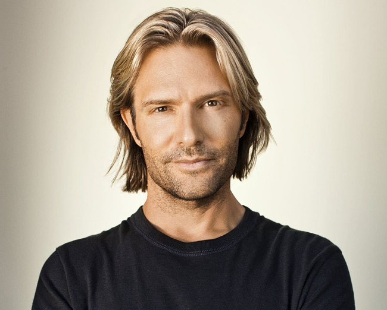
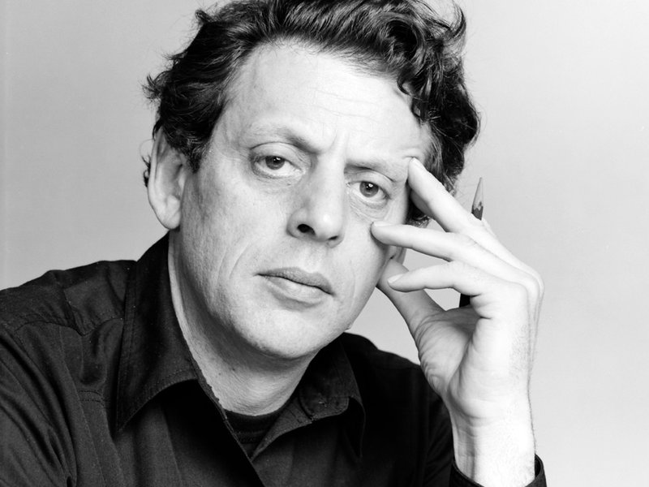
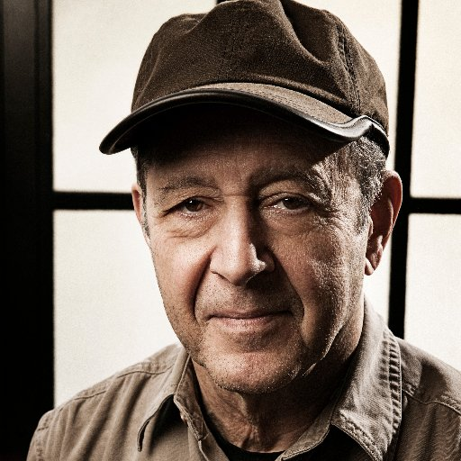
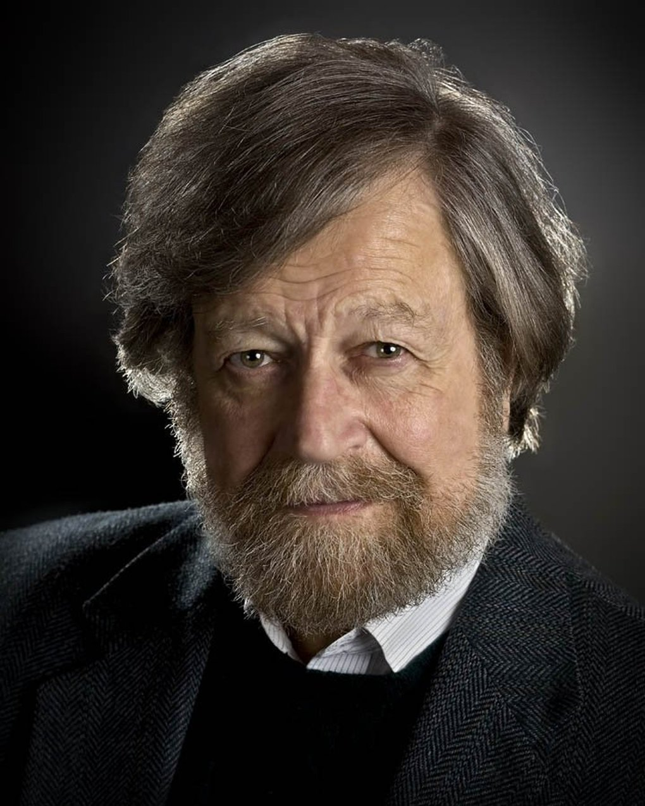
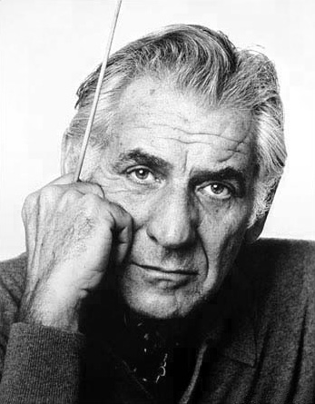
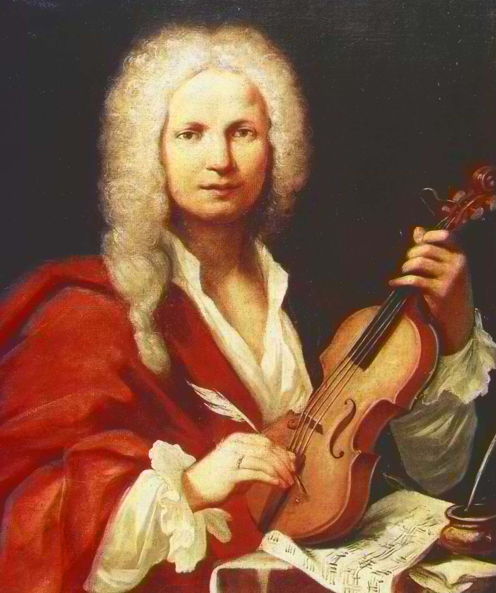
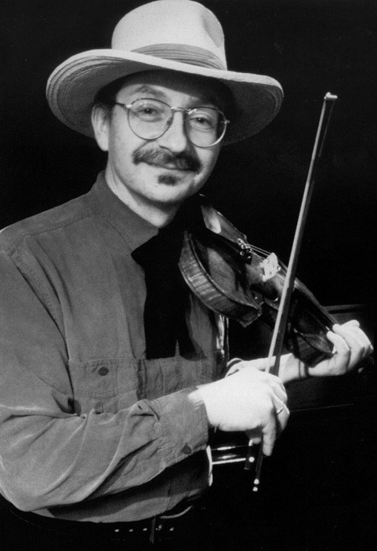
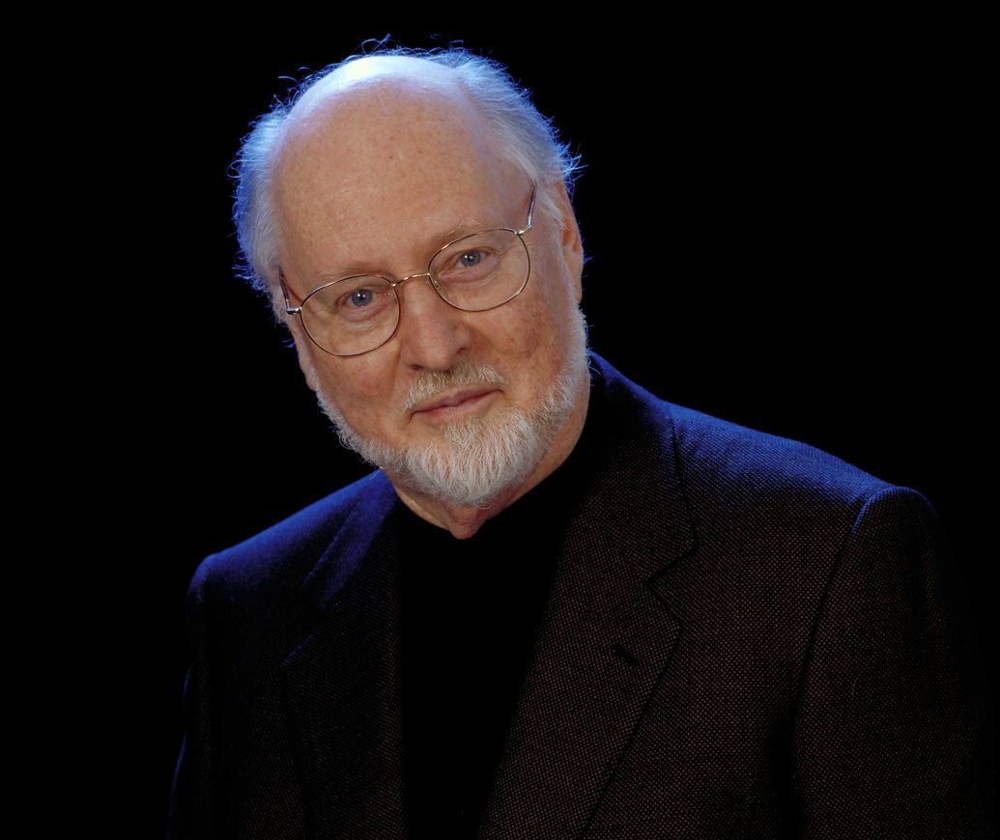

Ludwig van Beethoven (1770–1827) The German composer and
piano player Ludwig van Beethoven is broadly respected as the most prominent composer who ever lived. He extended the Classical conventions of Joseph Haydn, one of his instructors, and Wolfgang Amadeus Mozart and tested with individual
expression, a characteristic that affected the Sentimental composers who succeeded him. His life and career were checked by dynamic deafness, however the illness did not avoid him from composing a few of his most vital works amid the final 10 a long time of his life when he was about incapable to listen. Extending the scope of sonata, ensemble, concerto, and quartet, Beethoven’s notable works include Symphony No. 9 in D Minor, Op. 125, Symphony No. 5 in C Minor, Op. 67, Moonlight Sonata, and Für Elise.
Beethoven's melodic ability was self-evident at an early age, and he was at first cruelly and goal instructed by his father Johann van Beethoven. Beethoven was afterward instructed by the composer and conductor Christian Gottlob Neefe, beneath whose tutelage he distributed his to begin with work, a set of
console varieties, in 1783. He found alleviation from a broken domestic life with the family of Helene von Breuning, whose children he cherished, become a close acquaintence with, and instructed piano. At age 21, he moved to Vienna, which along these lines got to be his base, and considered composition with Haydn. Beethoven at that point picked up a notoriety as a virtuoso piano player, and he was before long sought by Karl Alois, Ruler Lichnowsky for compositions,
which come about in his three Creation 1 piano trios the most punctual works to which he concurred an creation number in 1795.
|

Eric Whitacre, One of America’s most conspicuous, and most effective modern composers, Nevada-born Eric Whitacre has ended up a family title over the globe. A flexible artist, he’s composed for the London Ensemble Symphony and Refrain, Julian Lloyd Webber, the Philharmonia Ensemble and composed film scores. His melodic, Heaven Misplaced: Shadows and Wings, has won grants whereas his record, Cloudburst, was an worldwide best-seller and indeed earned him a Grammy. But his most energizing venture is his Virtual Choir that brings together individuals from around the world to sing in a genuinely worldwide execution by means of YouTube.
His compositions have beenbroadly recorded and his make a big appearance collection as a conductor on All inclusive, Light and Gold, went straight to the best of the charts, gaining him a Grammy. As a visitor conductor he has drawn capacity groups of onlookers to concerts with numerous of the world’s driving symphonies and choirs in scenes such as Carnegie Corridor (Unused York), Walt Disney Concert Lobby (Los Angeles), the Illustrious Albert Corridor and Buckingham Royal residence (London). Voraciously inquisitive and a partnerof all sorts of music, Eric has worked with amazing Hollywood composers Hans Zimmer, John Powell and Jeff Beal as well as British pop symbols Laura Mvula, Imogen Load and Annie Lennox. Major classical commissions have been composed for the BBC Proms, Minnesota Symphony, Rundfunkchor Berlin, The Tallis Researchers, Chanticleer, Cincinnati Pops, Regal Philharmonic Ensemble, National Children’s Refrain of America and The King’s Artists.
|

Maryland-born Philip Glass has had a long and changed career, collaborating with everybody from Leonard Cohen to Martin Scorsese and enveloping all melodic classes. In spite of picking up a wide gathering of people outside the concert corridor, Glass portrays himself as a classicist composing works for the melodic bunch which he established, the Philip Glass Outfit. He has picked up a few grants for his soundtracks, counting an Oscar for his score to The Truman appear and a BAFTA for The Hours. Jiří Kylián’s expressive dance Wings of Wax included the music of Philip Glass nearby that of Bach’s. Imagined is the Netherlands Dans Theater moving a scene from the expressive dance at the Edinburgh Celebration Theater in 2008.
Glass portrays himself as a "classicist", indicating out he is prepared in agreement and counterpoint and considered such composers as Franz Schubert, Johann Sebastian Bach, and Wolfgang Amadeus Mozart with Nadia Boulanger.[102] Aside from composing within the Western classical convention, his music has ties to shake, encompassing music, electronic music, and world music. Early admirers of his moderation incorporate performers Brian Eno and David Bowie. Within the 1990s, Glass composed the previously mentioned ensembles Moo (1992) and Heroes (1996), specifically inferred from the Bowie-Eno collaboration collections Moo and "Heroes" composed in late 1970s Berlin.
|

Steve Reich Along with Philip Glass, Modern Yorker Steve Reich is credited with initiating the moderate development and made a difference alter the scene of classical music. His exploratory works, that incorporate ‘Come Out’, a work that highlights the talked voice of one of the Harlem Six casualties, drove the Modern York Times to call him "our most prominent living composer". Reich was granted the Premium Royal grant in Music in October 2006 in Tokyo. The grant highlights regions of the expressions not secured by the Nobel Prize in October 2006 in Tokyo.
Reich debuted a chunk, WTC 9/11, composed for String Quartet and Tape (a comparable instrumented to that of Distinctive Trains) in Walk 2011. It was performed by the Kronos Quartet, at Duke College, North Carolina, US. On Walk 5, 2013, the London Sinfonietta, conducted by Brad Lubman, at the Regal Celebration Lobby in London gave the world debut of Radio Revamp for gathering with 11 players, propelled by the music of Radiohead. The program too included Twofold Sextet for outfit with 12 players, Clapping Music, for two individuals and four hands highlighting Reich himself nearby percussionist Colin Currie, Electric Counterpoint, with electric guitar by Mats Bergström went with by a layered soundtrack, as well as two of Reich's little gathering pieces, one for acoustic disobedient, the other for electric rebellious and tape.
|

Morten Lauridsen, his phenomenal body of work, which incorporates O Magnum Mysterium, Contre Qui, Rose and Dirait-on has made him the most-frequently performed American choral composer. Born in Washington State in 1943, he moved south to consider composition at the College of Southern California within the early 1960s. He still educates there to this day, part his time between the college and Waldron Island off the coast of Washington State where he composes in a changed over common store. The 2012 narrative film Sparkling Night: A Representation of Composer Morten Lauridsen (DVD envisioned) takes after the composer from his Waldron Island withdrawal to practices in California and Scotland.
His melodic approaches are exceptionally assorted, extending from coordinate to theoretical in reaction to different characteristics (subject matter, dialect, fashion, structure, chronicled time, etc.) of the writings he sets. His Latin sacrosanct settings, such as the Lux Aeterna and motets, regularly reference Gregorian chant additionally Medieval and Renaissance strategies whereas mixing them inside a crisply modern sound whereas other works such as the Madrigali and Cuatro Canciones are exceedingly chromatic or atonal. His music has an in general lyricism and is firmly built around melodic and consonant motifs. Referring to Lauridsen's sacrosanct music, the musicologist and conductor Scratch Strimple said he was "the as it were American composer in history who can be called a spiritualist, (whose) examining, peaceful work contains an slippery and indefinable fixing which clears out the impression that all the questions have been replied.
|

The Austrian composer Joseph Haydn was one of the foremost vital figures within the advancement of the Classical fashion of music amid the 18th century. He made a difference setting up the shapes and styles for the string quartet and ensemble. Haydn was a productive composer, and a few of his most well-knownworks are Orchestra No. 92 in G Major, Head Quartet, and Cello Concerto No. 2 in D Major. His compositions are regularly characterized as light, witty, and rich.
Haydn's early work dates from a period in which the compositional fashion of the High Baroque (seen in J. S. Bach and Handel) had gone out of mold. This was a period of investigation and vulnerability, and Haydn, born 18 a long time some time recently the passing ofBach, was himself one of the melodic pioneers of this time. An more seasoned modern whose work Haydn recognized as an imperative impact was Carl Philipp Emanuel Bach. Following Haydn's work over the six decades in which it was delivered (generally from 1749 to 1802), one finds a slow but consistent increment in complexity and melodic modernity, which created as Haydn learned from his claim involvement which of his colleagues. A few critical points of interest have been watched within the advancement of Haydn's melodic style. In the late 1760s and early 1770s, Haydn entered a complex period known as "Sturm und Drang" ("storm and stretch").
|

Leonard Bernstein enormous break came by chance when he was called to conduct the Unused York Philharmonic Ensemble at the final diminutive when Bruno Walter was struck down with flu. Bernstein never looked back and went on to end up one of the awesome names in American music. A colossally skilled conductor and piano player, he is best known for West Side Story that catapulted him into the standard. Born in Massachusetts to Ukrainian guardians, he moved to Modern York after graduating from Harvard, where he got to be firm companions with Aaron Copland. Bernstein kicked the bucket in 1990 and as the burial service parade made it through the boulevards of Manhattan to his last resting place in Brooklyn, development specialists evacuated their caps and waved, hollering "Farewell, Lenny".
Bernstein was the primary American-born conductor to lead an American symphony. He was music executive of the Unused York Philharmonic and conducted the world's major ensembles, producing a critical bequest of sound and video recordings. He was also a basic figure within the cutting edge restoration of the music of Gustav Mahler, the composer whose music he was most energetically curious about. A gifted pianist, he frequently conducted piano concertos from the console. Bernstein was the primary conductor to share and investigate music on tv with a mass group of onlookers. Through handfuls of national and universal broadcasts, counting the Emmy Award-winning Young People's Concerts with the Modern York Philharmonic, he made indeed the foremost thorough components of classical music an experience in which everybody may connect. Through his instructive endeavors, counting a few books and the creation of two major universal music celebrations, he affected a few eras of youthful artists.
|

Antonio Vivaldi was an Italian composer and violinist of the Florid period. He composed music for musical dramas, solo rebellious, and little gatherings, but he is frequently celebrated foAntonio Vivaldi was an Italian composer and violinist of the Florid period. He composed music for musical dramas, solo disobedient, and little outfits, but he is frequently celebrated for his concerti, in which virtuoso solo entries interchange with entries for the full ensemble. He composed almost 500 concerti, of which his best-known work is the group of four violin concerti titled The Four Seasons. His Mandolin Concerto in C Major, RV 425, Concr his concerti, in which virtuoso solo entries substitute with sections for the total symphony. He composed almost 500 concerti, of which his best-known work is the bunch of four violin concerti titled The Four Seasons. His Mandolin Concerto in C Major, RV 425, Concerto for Four Violins and Cello in B Minor, Op. 3, No.10 and Concerto for Two Trumpets in C Major are similarly perky and complex.
Numerous of his compositions were composed for the all-female music gathering of the Ospedale della Pietà, a domestic for deserted children. Vivaldi had worked there as a Catholic cleric for 18 months and was utilized there from 1703 to 1715 and from 1723 to 1740. Vivaldi too had a few victorywith costly stagings of his musical dramas in Venice, Mantua and Vienna. After assembly the Head Charles VI, Vivaldi moved to Vienna, trusting for regal back. Be that as it may, the Sovereign passed on before long after Vivaldi's entry, and Vivaldihimself kicked the bucket in destitution less than a year later. After nearly two centuries of decay, Vivaldi's music experienceda restoration within the early 20th century, with much academic inquire about committed to his work. Numerous of Vivaldi's compositions, once thought misplaced, have been rediscovered - in one case as as of late as 2006. His music remains broadly prevalent within the display day and is routinely played all over the world.
|

Jay Ungar Another Modern York born composer, Ungar is known for his Ashokan Goodbye. A music composed as a goodbye waltz forthe yearly Ashokan Fiddle & Move Camps, that Ungar ran with his spouse at the Ashokan Supply lakefront campus within the state of Modern York. The tune was afterward utilized as the title topic of the 1990 US mini-series, The Gracious War.
In 1991, Ungar hitched individual artist Molly Artisan. They met amid the 1970s. They proceed to perform as a pair, with their band, Swingology, and as the Jay Ungar and Molly Artisan Family Band with Jay's girl Ruth Ungar (her mother is Lyn Solid) and her spouse Michael Merenda. In 1992, Ungar and Artisan given the soundtrack to the acclaimed narrative film Brother's Guardian, discharged as a music CD entitled Waltzing with You (1998). In 2006, the team featured the Northwest Folklife Celebration in Seattle.
|

John Williams think of a major blockbuster from the past 40 a long time, and likely John Williams given the music: Stars Wars, E.T., Jurassic Stop and Schindler's List are fair a modest list of the movies that Williams has sound tracked. Born in Long Island in 1932 Williams has won five Institute Grants and four Brilliant Globe Grants and was accepted into the Hollywood Bowl Corridor of Popularity in 2000.
Williams has composed for numerousfundamentally acclaimed and well known motion pictures, counting the Star Wars adventure, Jaws, Near Experiences of the Third Kind, Superman, E.T. the Extra-Terrestrial, Domestic Alone, the Indiana Jones movies, the primary two Jurassic Stop films, Schindler's List, and the primary three Harry Potter films. Williams has too composed various classical concertos and other works for instrumental outfits and solo disobedient. He served as the Boston Pops' foremost conductor from 1980 to 1993 and is its laureate conductor. He has been related with chief Steven Spielberg since 1974, composing music for all but five of his include movies.
|
{kind=link}
{kind=link}
{kind=link}
{kind=link}
{kind=link}
{kind=link}
{kind=link}
{kind=link}